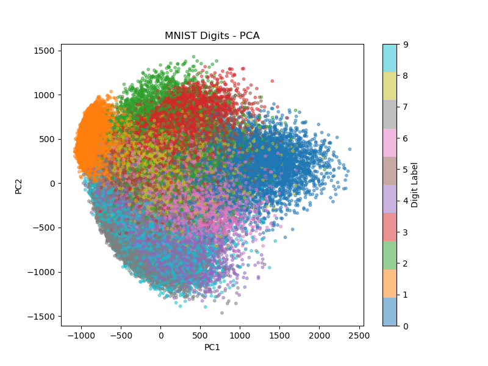
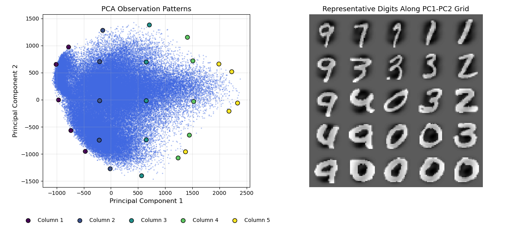
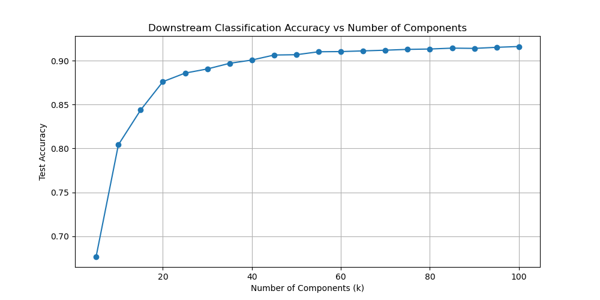

1. Data Overview
The dataset is readily available within sklearn:
import pandas as pd
from sklearn.datasets import fetch_openml
mnist = fetch_openml("mnist_784")
X, y = mnist.data, mnist.target.astype(int)
X is a dataframe containing 784 features, each representing a pixel in a 28 × 28 image.
There are 70,000 observations (digit images) in the dataset.
Below is a visualization of 25 randomly sampled observations.

2. Linear Dimension Reduction Techniques
This section applies, compares, and contrasts PCA, NMF, and ICA.
Principal Component Analysis (PCA)
Observations
PC1 and PC2 capture latent patterns among digits — some digits (e.g., digit 1) are well separated in this projection.
Interpreting PC1 and PC2 by examining observations along these directions yields the visualization below.

Features
PC2 appears to capture digit thickness — moving from positive to negative PC2, digits become thinner.
PC1 captures a subtler pattern, possibly related to digit slant.

Hyperparameter Tuning
The number of principal components (PCs) cannot exceed the number of original features.
To determine the optimal number of PCs, we can examine the variance explained using a scree plot and apply the “elbow rule,”
or use more quantitative approaches to tune this hyperparameter.
Since labels are available, one practical method is to fit a simple multinomial classifier on progressively larger subsets of the principal components
and track how classification accuracy changes until it stabilizes.
This downstream supervised tuning effectively helps optimize an unsupervised method.
Alternatively, we can evaluate the quality of the reduced representation by comparing how well observations in the reduced space preserve relationships
from the original space, for example using a Jaccard similarity measure.
For PCA, given the analytical closed form, nested, and ordered solution - it makes sense to use supervised optimization.
Below I fit 20 mutlinomial classification models on X projected to 5, 10, 15, ..., 100 PCs and evaluate the accuracy of each iteration to inspect convergence.

These results indicate that there is a convergence between 40 to 60 PCs - this appears to be the optimal number of components to use when performing PCA on MNIST dataset.
Non-Negative Matrix Factorization (NMF)
Observations
...
Features
...
Hyperparameter Tuning
...